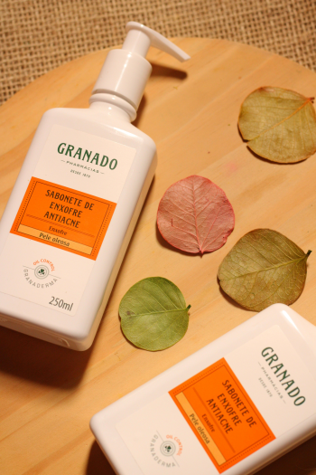
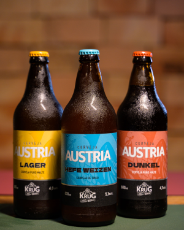
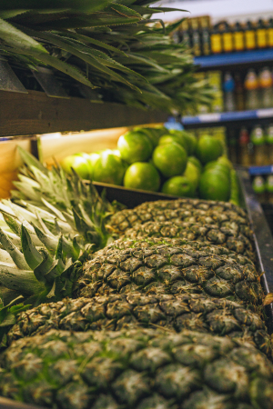
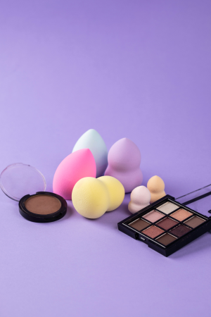
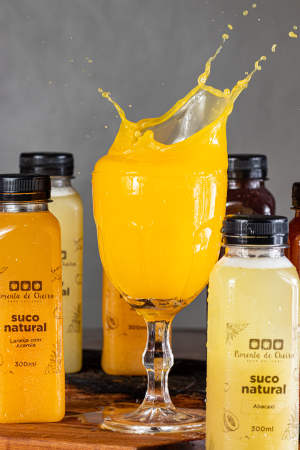
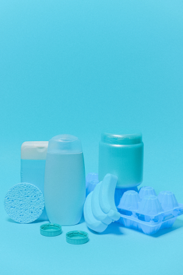

Shampoo

Descriçao: O shampoo é um produto cosmético cuja principal função é a limpeza profunda do couro cabeludo e dos fios, removendo resíduos, oleosidade e células mortas. Ele prepara o cabelo para receber tratamentos, como condicionadores e máscaras, e a sua escolha deve ser feita com base nas necessidades da pele da cabeça.
R$ 30
Higiene
Cerveja

A cerveja é uma das bebidas alcoólicas mais consumidas no mundo, feita a partir da fermentação de cereais (principalmente a cevada maltada) com água. É uma bebida carbonatada composta fundamentalmente por água, malte, lúpulo e levedura, apresentando grande variedade de aromas, cores e sabores.
R$ 50
Bebidas
Frutas

O abacaxi é uma fruta tropical originária da América do Sul, cultivada pela planta Ananas comosus. Ele é uma infrutescência (um conjunto de pequenas frutas unidas ao redor de um eixo), amplamente reconhecido por sua coroa de folhas, polpa amarela, suculenta e seu sabor agridoce característico.
R$ 10
Frutas
Maquiagem

A maquiagem consiste na aplicação de produtos cosméticos com a finalidade de embelezar, disfarçar imperfeições e realçar os traços naturais. Mais do que uma técnica de beleza, funciona como uma forma de linguagem visual, autocuidado e expressão de identidade e personalidade.
R$ 100
Beleza
Suco

O suco é uma bebida não fermentada obtida a partir da extração do líquido de frutas maduras ou outras partes vegetais. Ele é uma excelente fonte de vitaminas, minerais e antioxidantes, ajudando na hidratação e no bom funcionamento do organismo.
R$ 15
Bebidas
Recipientes
